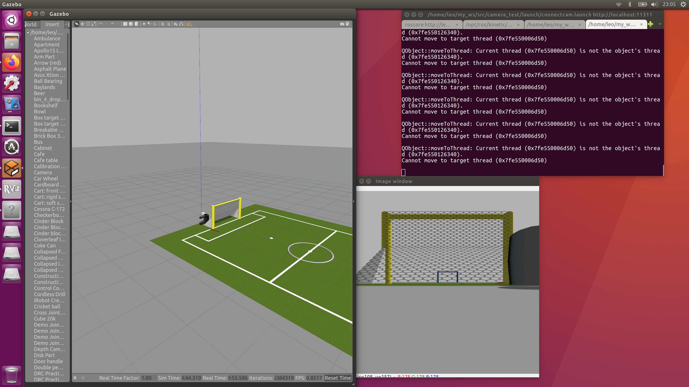

Connect ROS Camera Simulation to Opencv

#! /usr/bin/env python
import sys
sys.path.remove('/opt/ros/kinetic/lib/python2.7/dist-packages')
import cv2
sys.path.append('/opt/ros/kinetic/lib/python2.7/dist-packages')
from cv_bridge import CvBridge, CvBridgeError
import roslib
#roslib.load_manifest('camera_test')
import rospy
from sensor_msgs.msg import Image,CompressedImage
import numpy as np
class image_converter:
def __init__(self):
self.bridge = CvBridge()
self.image_sub = rospy.Subscriber('/arm_sensor/camera/image_raw/compressed',CompressedImage,self.callback,queue_size=1)
def callback(self,data):
try:
np_arr = np.fromstring(data.data,np.uint8)
cv_image = cv2.imdecode(np_arr,cv2.IMREAD_COLOR)
except CvBridgeError as e:
print(e)
rows,cols,channels = cv_image.shape
cv2.imshow('Image window',cv_image)
cv2.waitKey(2)
def main(args):
ic = image_converter()
rospy.init_node('image_converter',anonymous=True)
try:
rospy.spin()
except KeyboardInterrupt:
print('Shutting down')
cv2.destroyAllWindows()
if __name__ == "__main__":
main(sys.argv)
<launch>
<node pkg="camera_test" type="connectcam.py" name="image_converter" output="screen">
</node>
</launch>
References